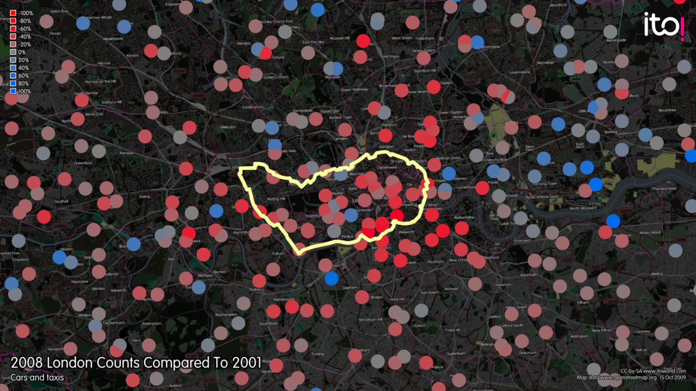

本周议题 01 · 城市 / 交通定价
拥堵收费是在卖路权，还是在给时间标价？
道路最稀缺的不是面积，而是高峰期通过核心区域的容量。收费能减少边际出行，却会把公平问题从排队转成支付。

先说经济逻辑
司机进入拥堵道路，会延长自己和其他人的行程，但通常只承担自己的油费和时间。拥堵费把一部分外部成本加入出行价格，使可以改时间、路线或方式的人重新选择。
顺手多懂一点
道路容量会出现“崩落”
车流接近饱和后，更多车辆会让速度急降，单位时间实际通过量甚至下降。因此需求只减少一小部分，也可能显著改善可靠性；反过来，刚扩建的新容量若吸引更多驾车，收益会被诱导需求吞回。
真正值得聊的地方
收费效率取决于收入怎么花、例外怎么设
高收入者更容易支付，低收入通勤者可能被迫改变；但原先的拥堵也并非免费，公交乘客、送货司机和无法弹性上班的人一直在付时间成本。
若收入用于改善公共交通并定向减免，收费可能让替代方案更公平；若例外过多，交通效果下降，规则又容易被游说切碎。拥堵费不是问“道路该不该收费”，而是问稀缺道路原本由排队、污染和时间损失向谁收费。
拥堵从来不是免费使用道路，只是它用每个人失去的时间收费，而且账单最不透明。